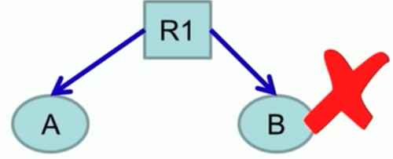
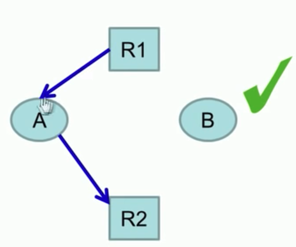
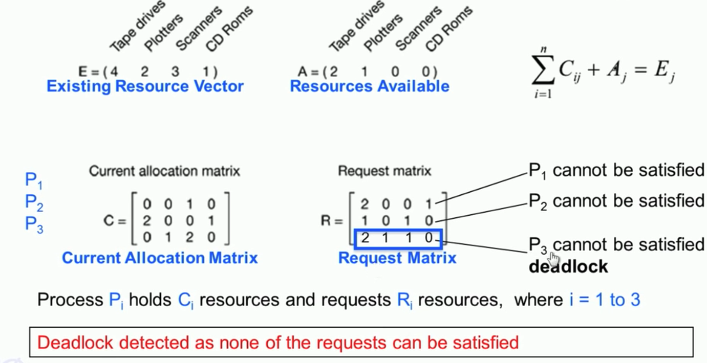

For a philosopher i, we have an infinite loop where the philosopher will think for some time first. Later the take the forks on the left and right, and eat. Finally after eating they put down the forks.
What if P1 and P3 are always given the priority i.e. if they are hungry they will always get the forks and get to eat ⇒ P2, P4, P5 STARVE.
If all P’s pick up their right forks at the same time then they will all wait for their left hand side fork to be free infinitely ⇒ DEADLOCK ⇒ STARVATION.
A Deadlock is a situation where programs continue to run indefinitely without making any progress. Each program is waiting for an event that another process can cause.
Suppose in this modified solution Pi takes the right fork. Then it would determine if the left fork is available.
If it is available, it will take the fork, eat and then put down both forks.
Else it will put down the right fork and sleep for some time.
If all Pi’s start at the same time, run and think for the same time then this could cause a deadlock for all Pi’s taking the fork and putting it down indefinitely.
An improvement to this solution would be to sleep for a random amount of time instead of a fixed time T so that Pi’s wake up at different times and eat. Note however that this does not guarantee that Pi’s won’t starve, it reduces the possibility. Such solutions are used in protocols like the ethernet.
Suppose all Pi’s are in the thinking state initially.
Now if P3 ⇒ take_fork ⇒ state changes to H ⇒ test ⇒ state changes to E ⇒ s[3] = 1 ⇒ s[3] = 0 ⇒ eat
Now for P4 ⇒ take_fork ⇒ state changes to H ⇒ test fails ⇒ down(s[4]) blocks P4 as long as P3 is eating
Now when P3 finishes eating ⇒ put_forks ⇒ state changes to thinking ⇒ test(LEFT/P2), test(RIGHT/P4) ⇒ test(P4) passes and state of P4 changes to eating and s[4] is set to 1 ⇒ this causes wakeup to occur and the semaphore decrements to 0.
A Deadlock arises in a system when each process in a set is waiting for an event that only another process in the set can cause.
In order to study deadlocks, we use direct graphs known as Resource Allocation Graphs.
Circles are used to represent processes and squares are used to represent resources. Arrows from the process to the resource would indicate that a request was made for that resource.
If the request was successful, the direction of the arrow changes i.e. the arrow points from the resource to the process indicating that the process holds the resource.
Four Conditions for a deadlock
Not Possible due to Mutual ExclusionHold and Wait
Mutual Exclusion: Each resource is either available or currently assigned to exactly one process.
No Preemption: Resources previously granted cannot be forcibly taken away from the process. They must be explicitly released by the process holding them.
Hold and Wait: A process holding a resource requests another Resource.
Circular Wait: There must be a circular chain of two or more processes, each of which is waiting for a resource held by the next member of the chain
Having all four of those conditions doesn’t imply that a deadlock has occurred. However if a deadlock has occurred then all 4 conditions must be present i.e. Deadlock ⇒ All conditions.
A deadlock in a system is a chanced event. Since ordering of resource requests and allocations are probabilistic, deadlock occurrence is also probabilistic. Therefore given the same set of resource requests and processes, one ordering could lead to a deadlock whereas another may not.
Having multiple resources can potentially reduce the chance of having a deadlock.
Should deadlocks be handled? Preventing / detecting deadlocks could be tedious. Can we live without it? What is the probability of occurrence? What are the consequences of a deadlock i.e. how critical is it? There are 3 ways of handling deadlocks:
Detection and Recovery
In order to detect a deadlock, the OS would need to keep track of the current resource allocation and requests i.e. which process is holding/waiting which resource.
Deadlock detection with one resource of each type would be to find cycles in the resource graph.
For a system with multiple resources of each type, another algorithm would be required. 
Goal is to check if there is any sequence of allocation by which all current requests can be met. If so, there is no deadlock.
What should the OS do when it detects a deadlock?
Raise an alert: tell the users and the admins
Force a preemption: take away a resource temporarily from a process (often not possible)
Rollback: checkpoint states and then rollback to the last non-deadlocked state and then the deadlock may not occur again (since resource allocation is probabilistic)
Kill Process: keep killing processes until deadlock is broken
§9.3: Dealing with Deadlocks
Deadlock Avoidance
Deadlock Avoidance means the system would never go into a state that could potentially create a deadlock situation. The system decided in advance if allocating a resource to a process will lead to a deadlock.
Note that the area where both intersect is called an unsafe state. A potential deadlock may occur in an unsafe state. Thus if the OS schedules the path such that the unsafe state is avoided then the potential deadlock is also avoided.
Safe State: A state is said to be safe, if there is some scheduling order in which every process can run to their completion even if all of them request their max number of resources immediately.
An unsafe state does not have to lead to dead lock; it could.
If there is instead a state from which no scheduling order exists such that every process executes, it would be an unsafe state.
Bankers algorithm with single resource: if system is in a safe state ⇒ grant request else postpone until later.
Deadlock Prevention
Deadlock avoidance is often not practical as we need to know max requests of a process. Deadlock prevention on the other hand prevents at least one of the 4 conditions necessary for a deadlock:
Mutual Exclusion
Not feasible in practice. But OS can ensure that resources are optimally allocated.
Hold and wait
One way to achieve this is to require all processes to request resources before starting execution. However this may not lead to optimal usage and it may not be feasible to know resource requirements.
No Preemption
Preempt the resources, such as by virtualization of resources (eg printer spools).
Circular Wait
One way, process holding a resource cannot hold a resource and request for another one
Ordering requests in a sequential / hierarchical order: Group resources into levels (ie prioritize resources numerically)
A process may only request resources at higher levels than any resource it currently holds. They may be released in any order. Consider semaphores s1, s2, s3 (with priorities in increasing order.
down(s1); down(s2); down(s3) ⇒ allowed
down(s1); down(s3); down(s2) ⇒ not allowed
§9.4: Threads (Part 1)
Consider a simple loop which sums from 1 to 100. This loop will have to run sequentially. However if we break it down into 4 chunks ie one loop for each chunk: (1,25) , (26,50), 51,75), (76,100); then we can parallelise it. If we create 4 processes, each doing 1/4th of the work then observe that:
Separate streams of execution within a single process. Threads in a process not isolated from each other.
What distinguishes on process from another is their state (registers and stack). Major advantage is that threads are extremely lightweight compared to processes.
Threads have efficient communication between entities (as they have shared global data) and have efficient context switching (pagetables are the same across the threads, smaller context needs to be saved/loaded)
pthread library
// Create a thread in a process
// 0: Thread Identifier (TID),
// 1: specify props of thread,
// 2: ptr to a func which starts execution in a diff thread,
// 3: args to the func
int pthread_create(pthread_t *thread, const pthread_attr *attr,
void *(*start_routine) (void *), void *arg);
// Destroying a thread
// 0: Ptr to return value to pass the return status of the thread
void pthread_exit(void *retval);
// Wait for a specific thread to complete
// 0: TID of the thread to wait for
// 1: Exit status of the thread
int pthread_join(pthread_t thread, void **retval);
After creating the 4 threads, it invokes join. What this join will do is that it will block until the corresponding TID exits.
Thus when t1 exits, from the thread_fn, pthread_join of t1 will wake up and completes its execution.
Only once the 4 threads complete execution, the join functions stop block and the last line summing up across the 4 threads is executed.
§9.5: Threads (Part 2)
As threads are executing contexts, we need some entity to decide which thread gets executed in which CPU. There are 2 strategies:
User Threads
Thread management done by the user level thread library. Kernel knows nothing about the threads.
A runtime system exists in the user space of the process to manage all the threads of a process. It also contains a thread table which contains information local to its process. Each process will have a thread table and the number of entries in the thread table is equal to the number of threads.
Advantages
Fast (really lightweight), no system call to manage threads. Thread library does everything.
Can be implemented in an OS that does not support threading.
Switching is fast. No switch from user to protected mode.
Disadvantages
Scheduling can be an issue (eg process with 3 threads - 2 blocked, 1 runnable. what should the be the decision?).
Lack of coordination between kernel and threads. (A process with 100 threads competes for a timeslice having a process with just 1 thread).
Requires non-blocking system calls (if one thread invokes a system call, all threads need to wait).
Kernel Threads
Threads directly supported by the kernel. Known as light weight processes.
The management of thread resources is done in the kernel space. Along with a process table, a thread table/ thread control block (TCB) is also maintained in the kernel space.
Advantages
Scheduler can decide to give more time to a process having larger number of threads.
Good for applications that frequently block i.e if a particular thread is ready it can be run whereas if one is blocked it can be not run.
Disadvantages
Slow since they involve system calls
Overheads in the kernel since kernel must manage and schedule threads as well as processes. Requires TCB for each thread to maintain info about threads.
Threading Issues
What should the system do when a thread invokes a fork?
Duplicate all threads? Not easy as some may be running/blocked in a system call, be in a critical section.
Duplicate only the caller thread? Feasible.
Segmentation fault in a thread ⇒ Should only the thread terminate or the entire process?
What the application does on creation is a create a pool of threads typically in blocked state.
When an event occurs, a thread from the pool is woken up and serviced. Then the thread goes back to the blocked state.
This eliminates the overheads as we no longer need to create and delete threads. However if all threads are being used to service an event and another event occurs then the new event will have to wait for a thread from the pool to be free ⇒ performance is affected.
If a larger number of threads are assigned to the pool but not many events occur then most threads are being blocked and not being used blocking resources for other processes.
{kind=link}
{kind=link}
{kind=link}
{kind=link}
{kind=link}
{kind=link}
{kind=link}
{kind=link}
{kind=link}
{kind=link}
{kind=link}
{kind=link}
{kind=link}
{kind=link}
{kind=link}
{kind=link}
{kind=link}
{kind=link}
{kind=link}
{kind=link}

{kind=link}
{kind=link}
{kind=link}